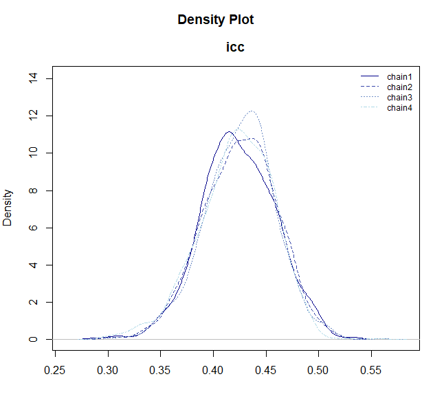

What is BayesRTMB?
BayesRTMB is an R package for Bayesian inference that leverages the RTMB automatic differentiation engine. It allows you to write models using a Stan-like intuitive syntax while performing Bayesian inference entirely within R.
This page provides an overview of BayesRTMB and the basic workflow you should know to get started.
Key Features
BayesRTMB offers the following advantages:
- No C++ compilation: Write your model and evaluate it instantly.
-
Organized block syntax: Define your model cleanly
using the
rtmb_code()block syntax. - Unified interface: Easily switch between NUTS (MCMC), ADVI (Variational Inference), and MAP estimation from a single model object.
- Laplace approximation: Efficiently marginalize random effects in hierarchical models.
- Model evaluation: Built-in support for computing marginal likelihoods and Bayes factors via Bridge Sampling.
-
Convenient wrapper functions: Start analyzing data
immediately with functions like
rtmb_lm()andrtmb_glmer()without writing custom models from scratch.
Installation
You can install the development version from GitHub:
# install.packages("remotes")
remotes::install_github("norimune/BayesRTMB")Important Note for Windows Users
Since BayesRTMB uses RTMB and TMB as its
underlying calculation engines, which depend on C++ libraries,
installing Rtools is mandatory for compiling the code
on Windows environments.
- Download and install the appropriate version of Rtools that matches your R version (e.g., Rtools44 for R 4.4.x).
- After installation, restart RStudio.
- You can verify if Rtools is correctly installed and recognized by your system by running the following code:
# If TRUE is returned, your environment is successfully set up for compilation.
pkgbuild::check_build_tools(debug = TRUE)Basic Workflow
A basic analysis in BayesRTMB proceeds in the following 3 steps:
- Prepare the data.
- Define the model using
rtmb_code(). - Create a model object and estimate using
rtmb_model().
As an example, let’s look at a simple normal distribution model
estimating the mean mu and standard deviation
sigma.
# 1. Data preparation
Y <- c(5.2, 4.8, 5.5, 6.1, 4.9, 5.3)
dat <- list(Y = Y)
# 2. Model definition
code <- rtmb_code(
parameters = {
mu = Dim(1)
sigma = Dim(1, lower = 0)
},
model = {
mu ~ normal(0, 10)
sigma ~ exponential(0.1)
Y ~ normal(mu, sigma)
}
)
# 3. Model object creation
mdl <- rtmb_model(data = dat, code = code)Inference Methods
You can call multiple estimation methods on the single created
mdl object, depending on your goal.
1. MAP Estimation (optimize)
Finds the point that maximizes the posterior distribution (Maximum A Posteriori). Because the calculation is extremely fast, it is ideal for quickly checking if there are errors in your model description or what the rough results will be.
opt_fit <- mdl$optimize()
opt_fit$summary()## Call:
## MAP Estimation via RTMB
##
## Negative Log-Posterior: 9.13
## Approx. Log Marginal Likelihood (Laplace): -11.14
##
## Point Estimates and 95% Wald CI:
## variable Estimate Std. Error Lower 95% Upper 95%
## mu 5.29839 0.17416 4.95704 5.63974
## sigma 0.42624 0.12240 0.24279 0.74830 2. MCMC Sampling (sample)
The most standard Bayesian inference approach that extracts accurate
samples from the entire posterior distribution using the NUTS (No-U-Turn
Sampler) algorithm. Specifying parallel = TRUE enables
parallel computation of multiple chains (default is
FALSE).
mcmc_fit <-
mdl$sample(
sampling = 1000,
warmup = 1000,
chains = 4,
parallel = FALSE
)
mcmc_fit$summary()## variable mean sd map q2.5 q97.5 ess_bulk ess_tail rhat
## lp -11.15 1.24 -10.19 -14.63 -9.97 923 830 1.01
## mu 5.29 0.30 5.32 4.68 5.87 1122 495 1.00
## sigma 0.65 0.31 0.48 0.32 1.41 1072 1404 1.003. Variational Inference (variational)
Approximates the posterior distribution using ADVI (Automatic Differentiation Variational Inference). It is suitable for quickly estimating complex models where MCMC would take too long. However, since the uncertainty of the posterior distribution (e.g., standard errors) tends to be underestimated, it is mainly suited for quickly obtaining point estimates or a rough shape of the distribution.
vb_fit <- mdl$variational(
method = "meanfield",
iter = 3000,
num_estimate = 4
)
vb_fit$summary()## variable mean sd map q2.5 q97.5
## lp -12.85 2.08 -12.33 -17.10 -10.21
## mu 5.31 0.39 5.32 4.54 6.07
## sigma 1.12 0.57 0.86 0.40 2.63 Models with Random Effects
When building hierarchical models, you can declare parameters as
random = TRUE.
data(discussion)
Y <- discussion$satisfaction
group <- discussion$group
G <- length(unique(group))
data_icc <- list(Y = Y,group = group, G = G)
code_icc <- rtmb_code(
parameters = {
mu <- Dim()
sigma <- Dim(lower = 0)
tau <- Dim(lower=0)
r <- Dim(G, random = TRUE)
},
model = {
Y ~ normal(mu + r[group] * tau, sigma)
r ~ normal(0, 1)
tau ~ exponential(1)
sigma ~ exponential(1)
},
generate = {
icc = tau / (tau + sigma)
}
)In such models, you can use the Laplace approximation to marginalize
(integrate out) the random effects. In MAP estimation
(optimize()), laplace = TRUE is the default
and is applied automatically. Confidence intervals for generated
quantities can be computed by setting se_sampling=TRUE.
mdl_icc <- rtmb_model(data_icc, code_icc)
opt_icc <- mdl_icc$optimize(laplace = TRUE, se_sampling = TRUE)
opt_icc## Call:
## MAP Estimation via RTMB
##
## Negative Log-Posterior: 407.96
## Approx. Log Marginal Likelihood (Laplace): -413.73
## Note: Random effects are stored in $random_effects
##
## Point Estimates and 95% Wald CI:
## variable Estimate Std. Error Lower 95% Upper 95%
## mu 3.43333 0.07387 3.28647 3.58483
## sigma 0.79705 0.04187 0.72217 0.88498
## tau 0.58599 0.06962 0.46731 0.73489
## icc 0.42370 0.03414 0.35876 0.49122 While you can specify it for MCMC (sample()), basically
the default laplace = FALSE is fine.
mcmc_icc <- mdl_icc$sample()
# You can draw the posterior distribution with plot_dens()
mcmc_icc$draws("icc") |> plot_dens()
Quick Analysis with Wrapper Functions
BayesRTMB provides wrapper functions that allow you to easily execute standard analyses without having to define models from scratch.
For instance, you can use rtmb_lm() for linear
regression.
data(discussion)
fit_lm <- rtmb_lm(satisfaction ~ talk + skill, data = discussion)
# MAP estimation
map_lm <- fit_lm$optimize()
map_lm$summary()## Call:
## MAP Estimation via RTMB
##
## Negative Log-Posterior: 416.94
## Approx. Log Marginal Likelihood (Laplace): -425.12
##
## Point Estimates and 95% Wald CI:
## variable Estimate Std. Error Lower 95% Upper 95%
## Intercept 2.14693 0.20761 1.74001 2.55384
## b[talk] 0.28612 0.05434 0.17961 0.39264
## b[skill] 0.20106 0.06604 0.07162 0.33050
## sigma 0.92284 0.03725 0.85265 0.99880
## Intercept_c 3.43324 0.05333 3.32871 3.53777 Functions tailored to analysis goals are available, such as
rtmb_glmer() for generalized linear mixed models, and
rtmb_fa() for factor analysis.
Also, using rtmb_ttest(), a Bayesian t-test can be
performed easily. By simply specifying the “parameter name to fix at 0”
in the null_model argument of the
bayes_factor() method, the estimation of the null model and
the calculation of the Bayes factor are done automatically.
data(discussion)
mdl_ttest <- rtmb_ttest(satisfaction ~ condition, data = discussion, r = 0.707)
mcmc_ttest <- mdl_ttest$sample()
# Comparison with the null model where effect size (delta) is fixed at 0
bf_ttest <- mcmc_ttest$bayes_factor(null_model = "delta")
bf_ttest## Bayes Factor (BF12) : 21.51
## Log Bayes Factor : 3.0685 (Approx. Error = 0.0021)
## Interpretation : Strong evidence for Model 1 Next Steps
Once you have grasped the overall picture of BayesRTMB, we recommend referencing the documents in the following order to deepen your understanding of specific usages.
-
Quick Start Learn
the roles of each block like
setupandtransform, and practical analysis methods through concrete examples such as binomial models, regression models, hierarchical models, GLMMs, and mixture models. - Writing Model Codes You can check the detailed specifications of each function.
-
Other References The following pages are useful,
especially when building models yourself.
-
rtmb_code(): Description rules and specifications of each block -
Dim(): Parameter types and constraints (parameter_types) -
distributions/math_functions: Built-in probability distributions and mathematical functions that stabilize numerical calculations.
-